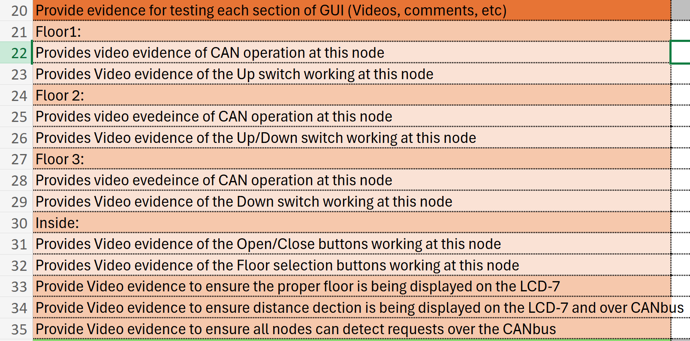
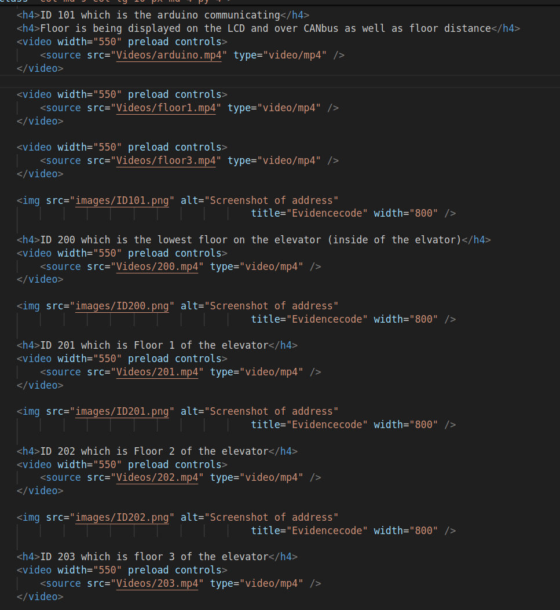

Weeks 1-2
-Started the test plan
-Helped with some of the files on the website
-Designed a GUI that we could implement
-Started the test plan
-Helped with some of the files on the website
-Designed a GUI that we could implement
-Finished Test Plan and added it to the test plan file on the
website
-Helped with some of the files on the website such as the
testplan, projectdetail, and css files
-Filmed videos of the elevator being tested
-added project evidence to the sidebar instead of top bar and made a page for each phase of the project at the top
-added videos and images of our work to the project evidence tab based on the project plan we created
  - talked with Coulter and Stuart on May 31 and improved our project plan and brainstormed ideas for the next phases
- researched and looked into phase 3 material and any additional milestones that we could add to the project
- looked into implementing voice commands to the project
- Took videos and images of each node with an oscilloscope reading of each address:
- for future reference:
ID 100 - Arduino
ID 101 - Raspberry
ID 200 - Bottom node (inside elevator)
ID 201 - Node 1 (microcontroller)
ID 202 - Node 2 (microcontroller)
ID 203 - Node 3 (microcontroller)
Hex 05h - Floor 1
Hex 06h - Floor 2
Hex 07h - Floor 3
-added project evidence
- talked with Coulter and Stuart on extra features we can add and how to implement it
- working on implementing php and databases
Student Success Week
- worked on php code to connect website to the databases
- worked on getting GUI buttons to interface with the database but had issues
- had issues connecting PHP with database (refer to issues page: Issues)
- meeting with Coulter and Stuart on Thursday July 3rd: worked on connecting website to database and planned for next week
-Meeting with Coulter and Stuart on Monday July 7th
-Worked on GUI html component of buttons to send a POST request to the php File
-Floor1.html : Floor2.html : Floor3.html : Inside.html
-Added videos of buttons updating the database to the evidence tab on the website
-Buttons now succesfully wrapped in a form that sends a POST request to floorReq.php and elevatorReq.php